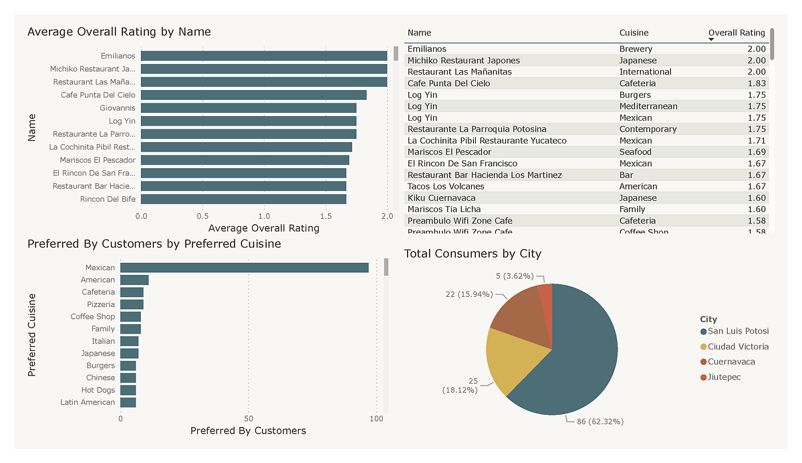

Projects
Cerebro Vision

Advanced CNN Diagnostics for Brain Tumor Identification focuses on enhancing the accuracy of brain tumor detection using deep learning techniques, specifically Convolutional Neural Networks (CNNs). The primary goal is to develop a model that can classify MRI images as either healthy or tumor-affected, potentially improving early detection and treatment outcomes.
View ProjectCar Price Predictor

The project titled Car Price Prediction Using Machine Learning aims to build a predictive model to estimate the prices of used cars based on various features like make, model, mileage, year of manufacture, fuel type, and more.
View ProjectRestaurent Rating Analysis
The goal of this project is to analyze a dataset containing customer ratings or purchase information and extract insights regarding various features, such as product categories and customer demographics. The ultimate aim is to predict purchase behaviors or ratings using machine learning techniques.
View Project